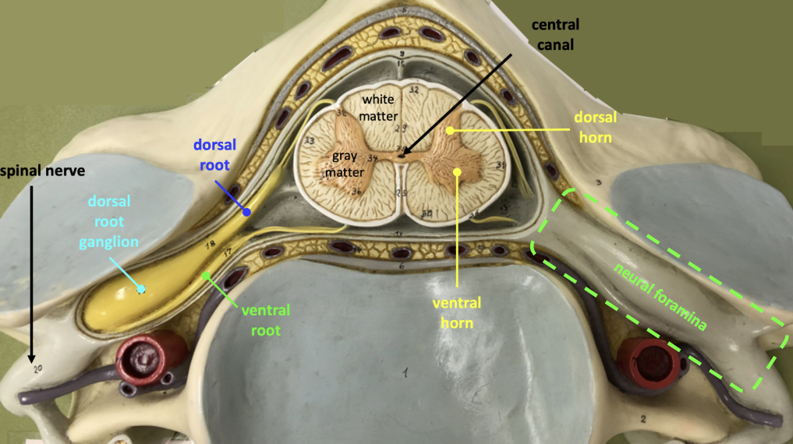

Back Pain Basics: Anatomy
This section gives a broad overview of the anatomical structures most relevant to back pain. The goal is not to memorize every structure in detail, but to understand the main pain generators and how they relate to common clinical patterns.
The spine
The spine is a complex structural column made up of vertebrae, intervertebral discs, joints, ligaments, muscles, nerves, and connective tissue. It supports the body, protects the spinal cord and nerve roots, and allows movement through the neck, trunk, and pelvis.
The spine is divided into five major regions:
- Cervical spine: 7 vertebrae
- Thoracic spine: 12 vertebrae
- Lumbar spine: 5 vertebrae
- Sacrum: 5 fused vertebrae
- Coccyx: usually 3 to 5 fused vertebrae
Each individual vertebra has two broad parts:
- The vertebral body, which is the large anterior portion that supports weight and transmits load.
- The vertebral arch, which is the posterior portion that surrounds the spinal canal and provides attachment points for muscles, ligaments, and joints.
The cervical spine is designed for mobility and supports the head. The thoracic spine is more rigid because it connects with the rib cage. The lumbar spine is particularly important in back pain because it supports much of the body’s weight and allows movements such as flexion, extension, rotation, and side-bending.
| Region | Key anatomical features | Main movement | Clinical relevance |
|---|---|---|---|
| Cervical spine | Smaller vertebrae, high mobility, supports the head | Flexion, extension, rotation, side-bending | Neck pain, cervical radicular pain, myelopathy |
| Thoracic spine | Attached to ribs, relatively rigid | Rotation more than flexion/extension | Thoracic pain is less common but may raise concern for systemic causes |
| Lumbar spine | Large vertebral bodies, high load-bearing role | Flexion, extension, side-bending, limited rotation | Common site of mechanical back pain, disc herniation, stenosis, and radicular pain |
| Sacrum | Fused vertebrae connecting spine to pelvis | Minimal movement | Forms the sacroiliac joint and transfers load to the pelvis |
| Coccyx | Small terminal fused vertebrae | Minimal movement | Can be involved in coccydynia after direct trauma or prolonged pressure |
The spinal cord
The spinal cord is part of the central nervous system and runs through the spinal canal, which is formed by the vertebral bodies anteriorly and the vertebral arches posteriorly.
The spinal cord carries motor, sensory, and autonomic information between the brain and the body. It usually ends around the L1-L2 vertebral level as the conus medullaris. Below this level, nerve roots continue downward within the spinal canal as the cauda equina before exiting through their respective foramina.
This is clinically important because compression of the spinal cord, conus medullaris, or cauda equina can cause neurologic symptoms. In the lumbar spine, severe compression of the cauda equina can cause bladder dysfunction, bowel dysfunction, saddle anesthesia, bilateral leg symptoms, or progressive neurologic deficits.
New urinary retention, overflow incontinence, saddle anesthesia, bilateral severe neurologic symptoms, or progressive motor weakness should prompt urgent assessment for cauda equina syndrome or another serious neurologic cause.
Nerve roots and foramina
Spinal nerve roots branch from the spinal cord and cauda equina, then exit the spine through openings called neural foramina. These are side openings formed between adjacent vertebrae.
Nerve roots are clinically important because irritation or compression can cause radicular pain or radiculopathy.
- Radicular pain refers to pain generated by irritation or inflammation of a spinal nerve root.
- Radiculopathy refers to objective nerve root dysfunction, such as weakness, sensory loss, or reflex change.
The spinal canal and neural foramina are important spaces because they can become narrowed. This narrowing is called stenosis.
- Central canal stenosis can compress multiple nerve roots.
- Foraminal stenosis can compress a specific exiting nerve root.
Lumbar spinal stenosis often presents with leg symptoms that worsen with standing or walking and improve with sitting or forward flexion.
Lumbar spinal stenosis often causes leg heaviness, pain, or fatigue with walking or standing, relieved by sitting or bending forward.
Common lumbar nerve root patterns include:
| Nerve root | Sensory clue | Motor clue | Reflex clue |
|---|---|---|---|
| L3 | Anterior thigh or medial knee | Knee extension | Patellar reflex may be reduced |
| L4 | Medial leg or medial ankle | Ankle dorsiflexion or knee extension | Patellar reflex |
| L5 | Lateral leg, dorsum of foot, great toe | Great toe extension or ankle dorsiflexion | No reliable reflex |
| S1 | Posterior leg, lateral foot, sole | Plantarflexion or toe walking | Achilles reflex |
Radicular pain is usually more leg-dominant and may feel sharp, shooting, burning, or electric.

Intervertebral discs
The intervertebral discs sit between adjacent vertebral bodies and help absorb load.
Each disc has two major parts:
- The annulus fibrosus, which is the tougher outer ring.
- The nucleus pulposus, which is the softer inner center.
Discs help absorb compression, distribute load, and maintain the space between vertebrae. Disc-related pain can occur when the disc itself is affected by acute injury or chronic degeneration. Disc material can also herniate and irritate a nearby nerve root, producing radicular pain.
These topics are explored in more detail in the Discogenic Pain and Lumbar Radicular Pain modules.
Disc-related pain is often worse with flexion, bending forward, or prolonged sitting.
Facet joints
The facet joints are paired joints at the back of the spine. They connect adjacent vertebrae and help guide and limit spinal movement.
Facet joints are especially involved in extension and rotation. They can become painful due to degeneration, overload, inflammation, or repetitive mechanical stress.
Facet-mediated pain is usually more back-dominant than leg-dominant. It can sometimes refer into the buttock or thigh, but it usually does not follow a clear dermatomal pattern.
Facet-mediated pain is often worse with extension and rotation, and may feel better with flexion.
Sacroiliac joint
The sacroiliac joint, or SI joint, connects the sacrum to the ilium of the pelvis. It transfers load between the spine and the lower limbs.
SI joint pain is often felt around the posterior pelvis, buttock, or PSIS region. It can sometimes refer into the thigh, but it usually does not follow a clear nerve root pattern.
The diagnosis usually depends on the overall clinical pattern rather than a single test.
SI joint pain is often felt near the posterior pelvis or buttock and may worsen with transitional movements, single-leg loading, or prolonged positions.
Muscles, fascia, and ligaments
The spine is supported by muscles, fascia, and ligaments. These structures help with posture, movement, load transfer, and segmental stability.
They are also clinically important because back pain is not always caused by a single disc, joint, or nerve root lesion. Many patients have pain influenced by muscle strain, myofascial irritation, conditioning, posture, load tolerance, or repeated activity.
| Region or structure | Examples | Clinical relevance |
|---|---|---|
| Superficial upper back | Trapezius, levator scapulae, rhomboids | Common contributors to neck, shoulder, and upper back myofascial pain |
| Thoracic paraspinals | Erector spinae, multifidus | Can contribute to midline or paraspinal thoracic pain |
| Lumbar paraspinals | Erector spinae, multifidus | Important for lumbar extension, segmental stability, and mechanical low back pain |
| Lateral trunk and deep back | Quadratus lumborum | Can contribute to flank, iliac crest, or low back pain patterns |
| Abdominal wall | Transversus abdominis, obliques, rectus abdominis | Helps with trunk stability, bracing, and load transfer |
| Fascia | Thoracolumbar fascia | Connects the spine, pelvis, and trunk muscles; relevant to load transfer and myofascial pain |
| Ligaments | Iliolumbar, sacroiliac, supraspinous, interspinous ligaments | Can contribute to localized pain after strain, overload, or repetitive stress |
Myofascial pain is often more regional than dermatomal. It may be associated with tenderness, tightness, trigger points, pain with specific movements, or pain after a change in activity.
Muscle and fascia-related pain is often regional, movement-sensitive, and influenced by load, posture, conditioning, and activity tolerance.